열전달의 기초 메커니즘과 전도
열전달의 메카니즘은 열역학 제 2법칙으로, 고온에서 저온으로 흐른다. 열전달에는 3가지의 방식이 존재하는데, 전도, 대류, 복사가 있다.
①전도(conduction) :물질 개개 분자가 가진 운동에너지가 인접분자에 퍼져나가는 현상. Fourier 법칙에 따르면 열훌럭스(heat flux)는온도구배에 비례하고 그 구배의 부호는 음이다.
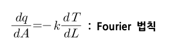
②대류(convection) :불의 뜨거운 공기가 방안으로 유입되는 것과 같이,또는 뜨거운 표면으로부터 흐르는 유체 쪽으로 열전달되는 것과 같이 유체분자 자신이 이동하여 고온과 저온 유체가 혼합함으로써 열전달이 일어난다. 이는 온도차에 비례하여 열전달이 일어난다.
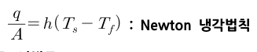
③복사(radiation): 공간을 통과한 전자기파에 의한 에너지 전달로, 모든 물체는 절대 0도가 아닌 한 그 온도에 따라 열에너지를 전자기파로 복사한다. 복사는 매체가 필요없으며 진공일 때 더 잘 일어난다.
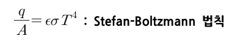
④전도,대류,복사는 단독으로 발생하는 것이 아니고,동시에 일어난다.
- 300℃이하:전도+대류,복사 무시
- 500℃이상:복사 고려
- 1000℃이상:거의 복사
이제 각각의 메카니즘에 대해 더 자세히 알아보도록 하자.
1)전도
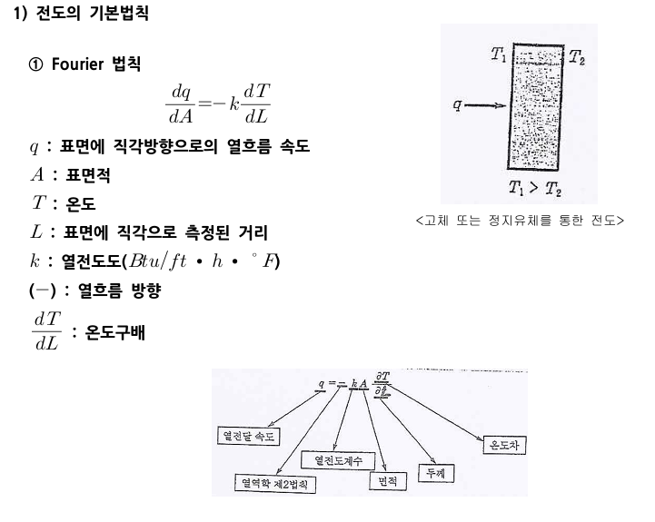
열전도는 푸리에 법칙으로 나타낼 수 있으며 온도차이와 표면적에 비례하고 벽의 길이에 반비례하며 이때 열전도도라는 보정상수가 있다. 열전도도는 보통은 상수이지만, 큰 온도구간에서는 선형 함수라고 볼 수 있다.
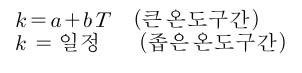 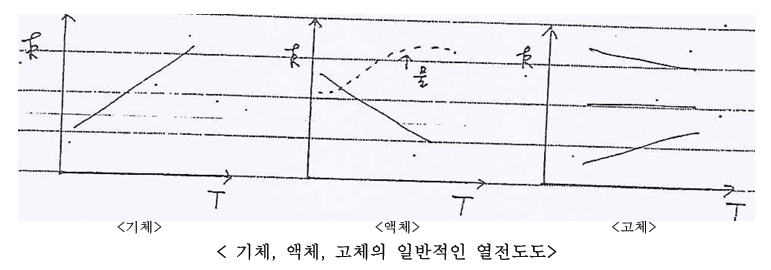
k는 넓은 온도 범위에서는 기체의 경우 온도가 올라가면 전도가 잘되고, 액체는 온도가 올라가면 열전도가 덜된다(물 제외). 보통 기체와 물은 온도와 열전도가 비례하고 나머지 액체는 반비례한다고 보면 된다. 고체의 경우 종류에 따라 온도와 열전도도의 관계는 상이하다.
이제 각 상황에서 전도 식을 유도해볼건데, 그 이전에 형상인자라는 것을 먼저 알아보도록 하자. 전도는 일반적으로 q=kS△T로 나타낼 수 있으며 이때 S를 형상인자라고 한다. 형상인자는 전도가 일어나는 물체의 형상에 따라 달라지는데, 이것만 결정되면 q를 결정할 수 있다. 대표적인 물체에 따른 형상인자는 다음과 같다.
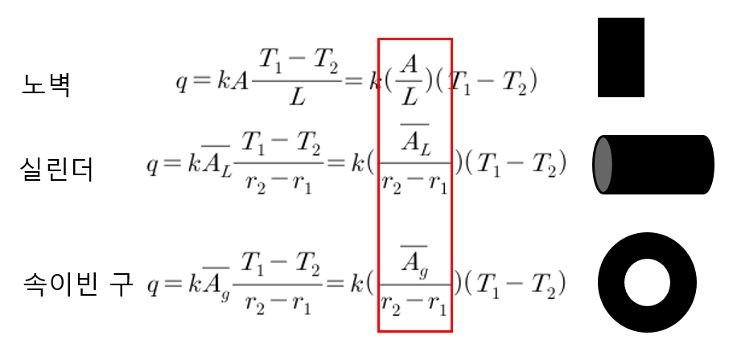
유도와 그 결과는 다음과 같으며 그것보단 결과식을 보는 것이 더 중요하다.
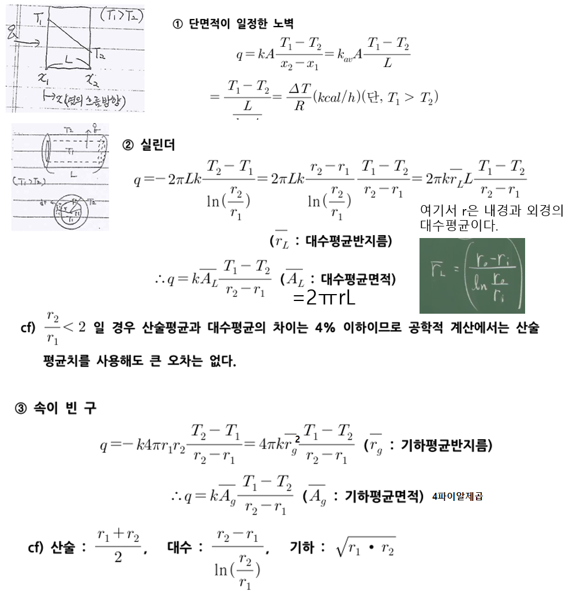
전도의 KST에서 S는 A/L꼴이며 이때 A는 형상에 따라 대수평균이거나 기하평균값을 쓴다.
만약 노벽이 연결된 적층벽(길이는 달라도 되지만 면적은 같다.)일 경우 전도식은 다음과 같다.
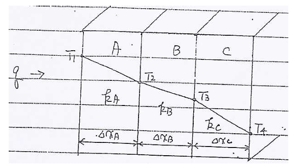 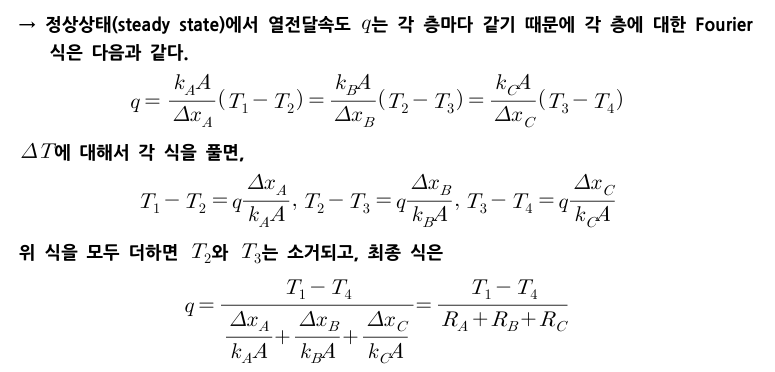
또 다층형 실린더의 경우에는 다음과 같다.
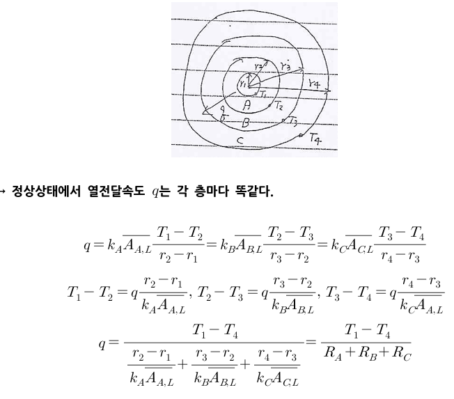
정리하면 다음과 같다.
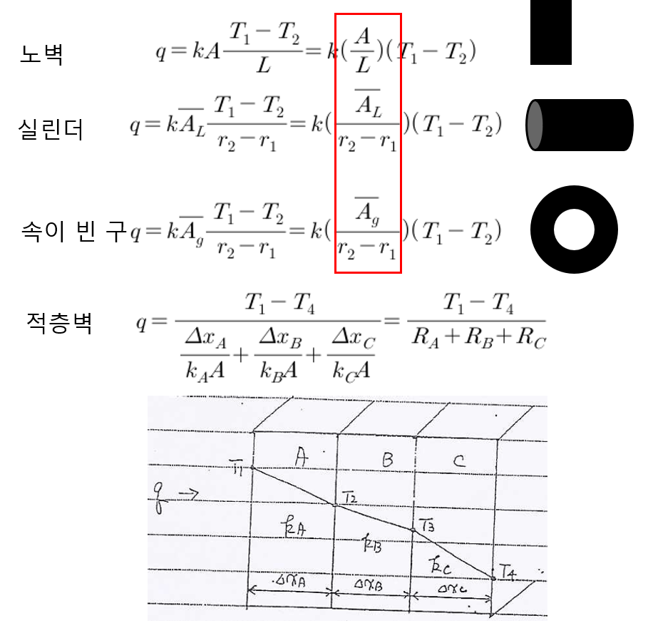
다음으로, 비정상상태일 때 열전도도 알아보도록 하자.
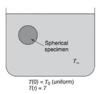
어떤 구체가 온도가 다른 유체와 맞닿아있을 때, 기본적으로 전도가 일어나게 된다. 이때 물의 온도를 T ∞라고 하고, 구체의 초기온도를 T(0)라고 한다. 시간이 지난 후 구체의 온도 T는 다음식으로 나타낼 수 있음이 알려져있다. 이를 총괄매개변수 분석이라고 한다.
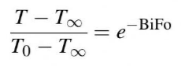
이때 바이오트 모듈러스와 푸리에 모듈러스라는 두 항이 나타난다. 이때 이 식은 Bi < 0.1인 경우에 적용된다.
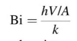
바이오트모듈러스는 열전달의 저항 V/AK와 열전달의 대류 저항(1/h)의 비로 생각할 수 있다. 따라서 바이오트 모듈러스가 크면 전도가 일어나지 않고 반대로 값이 작으면 전도가 더 잘 일어남을 의미한다. 바이오트 모듈러스의 크기는 총괄 매개변수 해석의 정확성을 판별하는 데 도움을 준다. bi값이 0.1보다 작으면 총괄매개변수 분석(위에 적힌)은 정확하다고 볼 수 있다. 따라서 비정상상태의 전도를 해석할 때 bi수의 평가는 제일 먼저 필요하다.
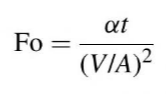
푸리에 모듈러스는 위와 같다.
이 식들은 비정상상태 열전도 상황에 적용할 수 있다. 예제를 풀어보며 이해해보자.
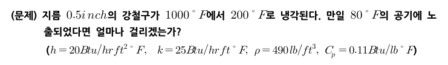 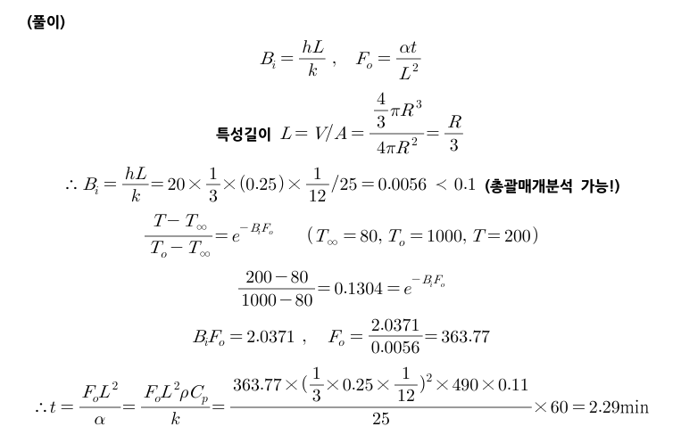